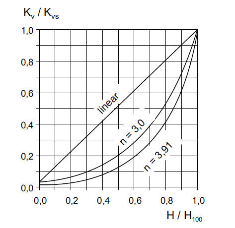
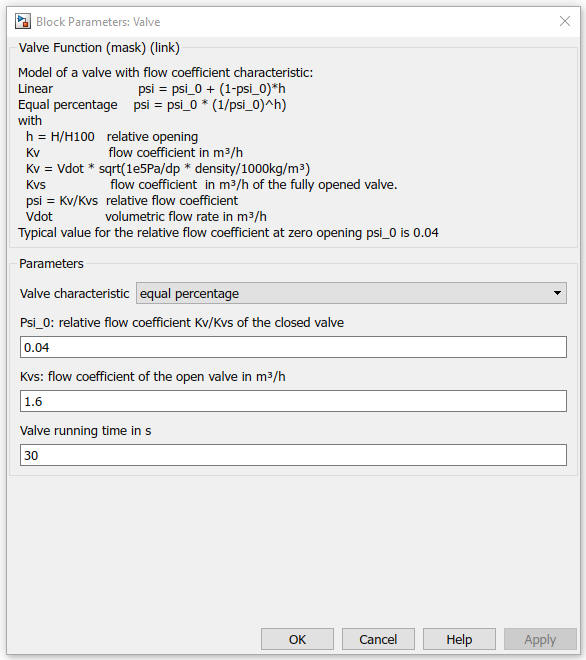

Valve
Path: CARNOT/Hydraulics
Purpose:
Calculate the pressure drop of a valve with different flow coefficient
characteristics.
Description:
The valve increases its pressure drop according to the control input
(opening). The calculation is based on the flow coefficient Kv and its
characteristics (model from [Volkmer, 2018]).
Kv = Vdot * sqrt(1e5Pa/dp * density/1000kg/m³)
Vdot is the volumetric flow rate in m3/h.
Resolving the equation for the pressure drop dp gives:
(Kv/Vdot)2² = 1e5Pa/dp * density/1000kg/m3
dp = (100 Pa*m3/kg) * density * (Vdot/Kv)2
and with Vdot = mdot/density the pressure drop becomes
dp = (100 Pa*m3/kg)/density * (mdot/Kv)2
change unit of mdot from kg/h to kg/s: 1 kg/h = 1 kg/(3600s) we finally have
dp = (100 Pa*m3/kg) * (3600 s/h)2 / density * (mdot/Kv)2
The Carnot equation for the pressure drop is: dp = qua * mdot2
Comparing the two equations for the pressure drop we get:
qua = (100 Pa*m3/kg) * (3600 s/h)2 / (density*Kv2)
Kvs is defined as the flow coefficient of the fully opened valve. The relative flow coefficient psi is:
psi = Kv/Kvs
Two characteristics of the relative flow coefficient are modelled:
with
h = H/H100 relative opening
psi_0 relative flow coefficient of the closed valve (h = 0)

Figure: Relative flow coefficient Kv/Kvs as a function of the
relative opening H/H100 [VDMA 2015]
Input:
| THBin | : | Thermo-Hydraulic Bus at the inlet of the valve |
| Ctrl | : | valve position (0..1) 0 = closed, 0.5 = half way open, 1 = open |
Output:
| THB | : | Thermo-Hydraulic Bus at the outlet of the valve |
| pos | : | current valve postion (0..1) |
Parameters and Dialog Box:

Examples:
Open the example explorer from the Matlab command window
ExampleBrowser
or load the examples via the CARNOT library.
Literature:
Volkmer: Presentation of the FH Biberach Thamo_6x2 Library,
Carnot User Meeting Darmstadt 2018
VDMA-Einheitsblatt 24199, 2015
Characteristics:
| Direct Feedthrough | : | Yes |
| Sample Time | : | Inherited from driving block |
| Vectorized | : | No |